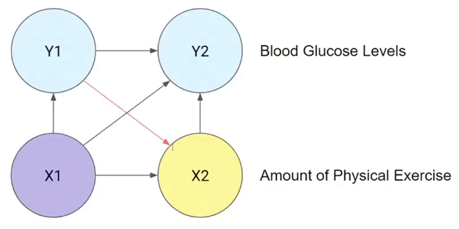
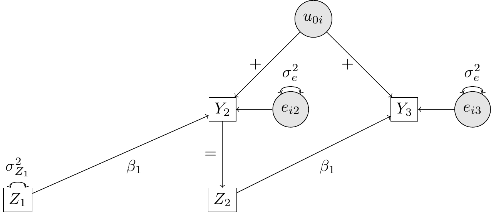
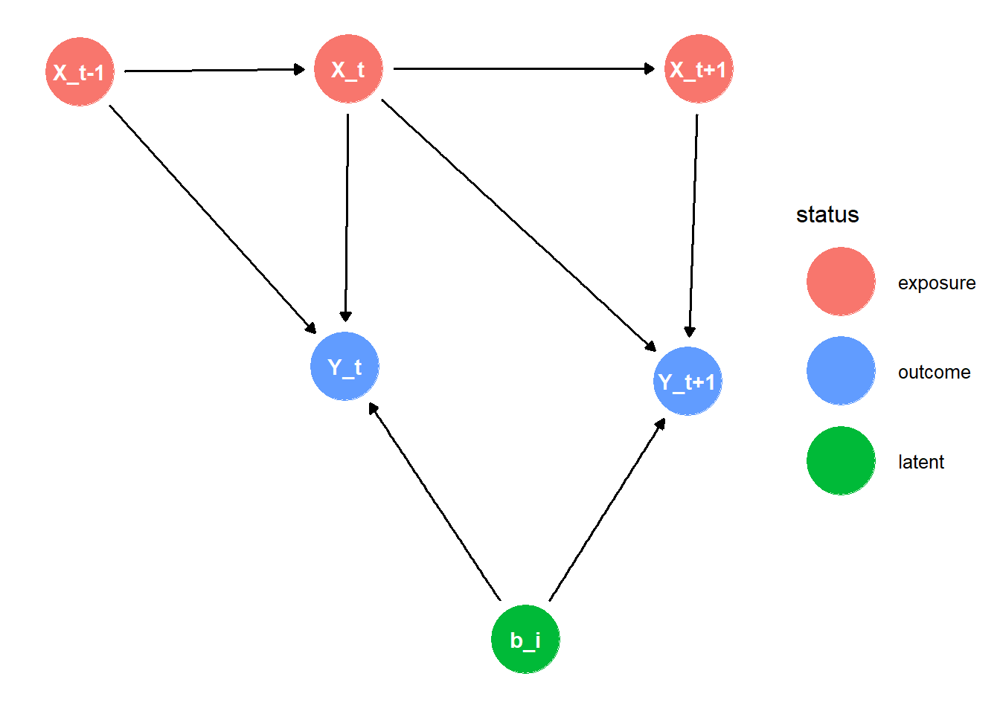
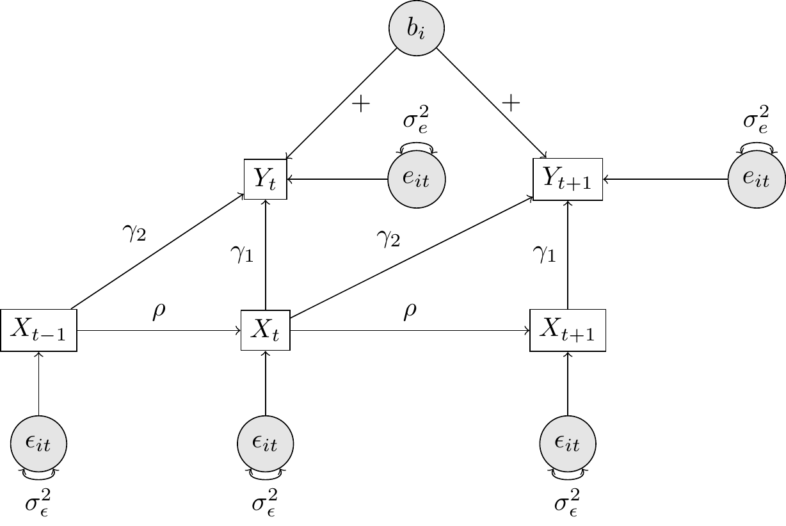
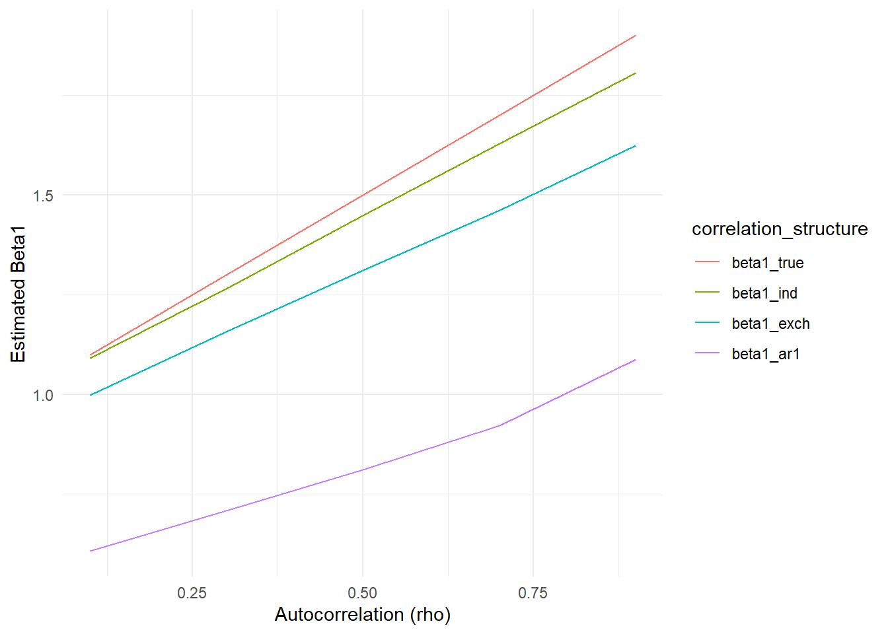
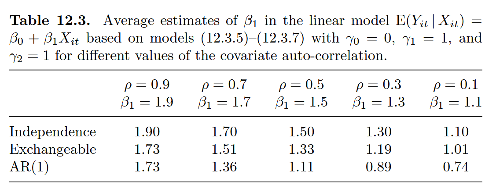

Data Generating Models of Qian et al. (2020)
1 Introduction
In dit document zal ik de data-genererende modellen gepresenteerd door Qian et al. (2020) opnieuw creëren, vergezeld door visuele weergaven van deze modellen. Laten we eerst enkele hoofdpunten van GEE samenvatten.
Parameters in marginale modellen (bijv. GEE) worden geïnterpreteerd als populatieniveau-effecten (en dus niet als individuele effecten!)
Dat wil zeggen, \(\beta_j\) is het effect van variant j gemiddeld over de hele populatie (ervan uitgaande dat andere varianten vastliggen: Winter 437).
Voorbeeld: Hoe beïnvloedt veroudering de neiging om dementie te ontwikkelen in de gehele populatie?
Merk op dat de lineaire structuur van de GEE impliciet aanneemt dat \(Y_{it} \perp X_{ik} \mid X_{it}\), voor alle \(t \neq k\)
Dit bekent: De uitkomst op tijdstip \(t\) is conditioneel onafhankelijk van verklarende factoren op alle andere tijdstippen \(k\), gegeven de verklarende factoren op het huidige tijdstip \(t\)
Dit wordt de “full covariate conditional mean (FCCM)” aanname genoemd door Diggle et al. (2002) en Qian et al. (2020). Maar zij herschrijven dit net iets anders (equation 5):
\[ E[Y_{it+1} \mid X_{it}] = E[Y_{it+1} \mid X_{i1}, \ldots, X_{iT}] \]
Deze aanname geldt bij (a) tijdsinvariante covariaten en (b) deterministische/exogene tijdsafhankelijke covariaten, maar niet bij stochastische/endogene tijdsafhankelijke covariaten!
Een uitzondering op deze regel is wanneer we een “diagonale weight matrix” gebruiken in de GEE (i.e., working independence).
Laten we zien hoe deze aanname geschonden kan worden:

Zoals geïllustreerd door de rode pijl, is \(Y1\) niet onafhankelijk van \(X2\), gegeven (dat we de waarde weten van) \(X1\). Als we dus geinteresserd zijn in het marginale effect van \(X2\) op \(Y2\), dan is in dit geval de uitkomst biased door een schending van de FCCM aanname:
\[ E[Y_{i2} \mid X_{i2}] \neq E[Y_{i2} \mid X_{i1},X_{i2}] \]
Vanuit een causaal perspectief kunnen we ook zeggen dat—in de bovenstaande DAG—\(Y1\) een confounder is in de relatie tussen \(X2\) en \(Y2\). Als we hiervoor niet controleren is het effect van \(X2\) op \(Y2\) een ander effect (door deze invloed van \(Y1\)) dan het effect van \(X1\) op \(Y1\), wat wel aan de FCCM aanname voldoet.
2 Situations Without Treatment
2.1 Example in Section 2.2 of Qian et al. (2020)
Beschouw als concreet voorbeeld het geval waarin elk individu op 2 tijdspunten wordt geobserveerd (\(T_i = 2\)), en de covariaat op het tweede tijdspunt de lag-1 uitkomst is: \(X_{i2} = Y_{i2}\).
Door de uitkomst te laggen, hebben we in wezen drie tijdspunten: \(X_{i1}\), \(X_{i2} = Y_{i2}\), en \(Y_{i3}\).
Stel dat de variabelen worden gegenereerd volgens het volgende multilevel lineaire model (MLM) met een random intercept:
\[ b_i \sim N(0, \sigma_u^2), \]
\[ X_{i1} \sim N(0, \sigma_{X_1}^2) \text{ independently of } b_i, \]
\[ Y_{i2} \mid X_{i1}, b_i \sim N(\beta_0 + \beta_1 X_{i1} + b_i, \sigma_\epsilon^2), \]
\[ X_{i2} = Y_{i2}, \]
\[ Y_{i3} \mid X_{i1}, Y_{i2}, X_{i2}, b_i \sim N(\beta_0 + \beta_1 X_{i2} + b_i, \sigma_\epsilon^2). \]
2.1.1 Translating the notation
In de tabel hieronder geven we de vertaling van de originele notatie in Qian et al. (2020) naar notatie die gebruikelijker is in psychologisch onderzoek.
| Parameter | Original | New |
|---|---|---|
| Fixed intercept | \(\alpha_0\) | \(\gamma_{00}\) |
| Fixed slope for \(X_{it}\) | \(\beta_1\) | \(\beta_1\) |
| Random intercept | \(b_{i0}\) | \(u_{0i}\) |
| Residual variance of Error term | \(\sigma_\epsilon^2\) | \(\sigma_e^2\) |
| Covariate | \(X_{it}\) | \(Z_{it}\) |
Laten we nu het model in deze notatie herschrijven:
\[ u_{0i} \sim N(0, \sigma_u^2), \]
\[ Z_{i1} \sim N(0, \sigma_{Z_1}^2) \text{ independently of } u_{0i}, \]
\[ Y_{i2} \mid Z_{i1}, u_{0i} \sim N(\gamma_{00} + \beta_1 Z_{i1} + u_{0i}, \sigma_e^2), \]
\[ Z_{i2} = Y_{i2}, \]
\[ Y_{i3} \mid Z_{i1}, Y_{i2}, Z_{i2}, u_{0i} \sim N(\gamma_{00} + \beta_1 Z_{i2} + u_{0i}, \sigma_e^2). \]
2.1.2 Visualizing the Model
We zijn geinteresseerd in het effect van \(Z_{it}\) (\(= Y_{it}\)) op \(Y_{i(t+1)}\).
Laten we eerst de DAG tekenen (see Figure 1). In dit specifieke geval wordt de endogene tijdsvariërende covariaat veroorzaakt door de vorige uitkomst en beïnvloedt het de toekomstige uitkomst.
Merk op dat er een open biasing path bestaat van \(Y_2\) naar \(Z_2\) in de DAG: de predictor/covariaat \(Z_2\) wordt veroorzaakt door (in dit geval equivalent aan) de eerdere uitkomst \(Y_2\)—en is dus een tijdsvariërende, endogene covariaat. Daarom gaat de aanname van de “full covariate conditional mean (FCCM)” niet op:
\[ E[Y_{it+1} \mid Z_{it}] = E[Y_{it+1} \mid Z_{i1}, \ldots, Z_{iT}] \]
aangezien
\[ E[Y_{i3} \mid Z_{i2}] \neq E[Y_{i3} \mid Z_{i1}, \ldots, Z_{i2}] \]
Oftewel, de verwachte waarde van \(Y_i3\) gegeven \(Z_{i2}\) is niet gelijk aan de verwachte waarde van \(Y_{i3}\) gegeven \(Z_{i1}\) en \(Z_{i2}\). Anders gezegd, de uitkomst \(Y_3\) is niet conditioneel onafhankelijk van de uitleggende factoren/covariaten op alle andere tijdspunten (i.e., \(Z_1\)), gegeven dat we de waarden kennen van de covariaat \(Z_2\) op het huidige tijdstip \(t=2\).
Het in rekening brengen van afhankelijkheden tussen observaties in de uitkomst (i.e., het gebruik van “non-diagonal covariance weighting”, zie Diggle et al. (2002))—door middel van (a) working correlation matrices in GEE (behalve onafhankelijkheid) of (b) door de random intercept in het multilevel lineaire model—leid tot conditionele schattingen op basis van de random effecten, en niet tot schattingen op populatieniveau. Daarentegen schatten de GEE met working independence en GLM het model gewoon door onafhankelijkheid aan te nemen, waardoor de schattingen op populatieniveau wel valide zijn.
Wat gebeurt hier precies?
- In de schatting d.m.v. de MLM is \(u_0\) een confounder in de relatie tussen \(Y_2\) en \(Y_3\), en daarmee ook in de relatie tussen \(Z_2\) en \(Y_3\) (aangezien \(Y_2 = Z_2\)). Dus de random intercept beinvloedt de covariate \(Z_2\) en daarmee ook de uitkomst \(Y_3\).
“\(Z_{it}\) being endogenous means it may depend on previous outcomes, which in turn implies dependence on the random effect \(u_{0i}\). Thus, \(E(u_{0i} \mid Z_{it})\) is usually nonzero and the conditional model may no longer imply the marginal model” (Qian et al., 2020)
- In de GEE met working independence en GLM wordt de relatie tussen \(Z_2\) en \(Y_3\) geschat op basis van de aanname van onafhankelijkheid, en is er dus geen confounder \(u_0\) in de relatie tussen \(Z_2\) en \(Y_3\).
Daardoor is \(E(u_{0i} \mid Z_{it}) = 0\) en de marginale schatting van \(\beta_1\) in de relatie tussen \(Z_2\) en \(Y_3\) is onvertekend.

In Figure 2 wordt duidelijk dat de marginale relatie tussen \(Z_1\) en \(Y_2\) eenvoudigweg is:
\[ E[Y_{i2} \mid Z_{i1}] = \gamma_{00} + \beta_1 Z_{i1} \]
De relatie tussen \(Z_2\) en \(Y_3\) is complexer door de invloed van de random intercept \(u_{0i}\)
\[ E[Y_{i3} \mid Z_{i2}] = (1- \rho \zeta - \rho ) \gamma_{00} + [(1-\rho \zeta) \beta_1 + \rho] Z_{i2} \]
Specifieker gezegd, de interpretatie van de slope \(\beta_1\) als effect op populatieniveau is alleen valide voor het effect van \(Z_1\) op \(Y_2\). Daarom kunnen we wel zeggen dat
\(\beta_1\) het effect is van variabele \(Z_1\) gemiddeld op \(Y_2\), over de gehele populatie (onder voorwaarde van constante waarden van andere variabelen)
maar ditzelfde kunnen we niet zeggen voor het effect van \(Z_2\) op \(Y_3\).
De relatie tussen \(Z_2\) en \(Y_3\) wordt verstoord door het niet-geobserveerde random effect \(u_{0i}\), dat ook geassocieerd is met \(Y_2\).
2.1.3 Data Generation and Estimation
Laten we nu de data genereren volgens dit model en het model schatten met een multilevel lineair model (MLM) en een generalized estimating equation (GEE)-model. Hier zijn we geïnteresseerd in het schatten van het effect van \(Z_{it}\) op \(Y_{i(t+1)}\). Voor deze analyse in long-format werd daarom een lagged variabele gebruikt voor \(Z_{it}\), zodat \(Y_{i2}\) wordt regressed op \(Z_{i1}\) en \(Y_{i3}\) op \(Z_{i2}\).
We gebruiken de volgende specificatie
# Set the parameters for the simulation
n_sim <- 1 # Number of simulations
n_i <- 100000 # Number of individuals per simulation
sigma_u <- 1 # Variance of random intercept
sigma_Z1 <- 1 # Variance of Z1
sigma_e <- 1 # Residual variance
beta_1 <- 0.8 # Slope
gamma_00 <- 2 # Intercept
# Simulate data for each individual
for (i in 1:n_i) {
u_0i <- rnorm(1, 0, sigma_u)
Z_i2_lag <- Z_i1 <- rnorm(1, 0, sigma_Z1)
Y_i2 <- rnorm(1, gamma_00 + beta_1 * Z_i1 + u_0i, sigma_e)
Z_i3_lag <- Z_i2 <- Y_i2
Y_i3 <- rnorm(1, gamma_00 + beta_1 * Z_i2 + u_0i, sigma_e)
# Store the data in a list
subject_data <- data.frame(
id = i,
time = 1:2,
Y = c(Y_i2, Y_i3),
Z_lag1 = c(Z_i2_lag, Z_i3_lag)
)
data_list[[i]] <- subject_data
}
# Fit the models
mlm_mle <- lmer(Y ~ Z_lag1 + (1 | id), data = data_sim, REML = FALSE)
gee_exch <- gee(Y ~ Z_lag1, id = id, data = data_sim, family = gaussian, corstr = "exchangeable")| MLM_mle | GEE_exch | GEE_ind | GEE_ar1 | GLM | GLS_symm | |
|---|---|---|---|---|---|---|
| Intercept | 2.0 | 2.0 | 1.82 | 2.0 | 1.82 | 2.0 |
| Z_lag1 | 0.8 | 0.8 | 0.98 | 0.8 | 0.98 | 0.8 |
We can clearly see that the MLM and GEE models provide exactly the same estimates for the fixed intercept and fixed regression coefficient, with the exception of the GEE with independence working correlation structure.
According to Pepe and Anderson (1994), this is the only structure that can avoid bias in the estimation of the fixed effects (i.e., that has a valid marginal interpretation).
As a reminder, the fixed effects were specified as \(\gamma_{00} = 2\) and \(\beta_1 = 0.8\). Thus, we can see that all models except the GEE with independence working correlation structure returns estimates that are very close to the true values—which represented the conditional mean of \(Y\) given \(Z\) and \(u_{0i}\) (rather than the marginal mean of \(Y\) given \(Z\)).
To see why this makes sense, it is important to realize that the parameter estimates represent the parsimonious conditional relationship
\[ E[Y_{it+1} \mid Z_{it}, u_{0i}] = \gamma_{00} + \beta_1 Z_{it} + u_{0i} \]
And not the marginal relationship, which according to Qian et al. (2020) is given by:
\[ E[Y_{i2} \mid Z_{i1}] = \gamma_{00} + \beta_1 Z_{i1} \]
\[ E[Y_{i3} \mid Z_{i2}] = (1- \rho \zeta - \rho ) \gamma_{00} + [(1-\rho \zeta) \beta_1 + \rho] Z_{i2} \]
Let’s confirm this by calculating the true marginal effect
# Restate the parameters
sigma_u <- 1 # Variance of random intercept
sigma_Z1 <- 1 # Variance of Z1
sigma_e <- 1 # Residual variance
beta_1 <- 0.8 # Slope
gamma_00 <- 2 # Intercept
# prepare variances (instead of SD)
sigma2_u0 = sigma_u^2
sigma2_e = sigma_e^2
sigma2_Z1 = sigma_Z1^2
# Compute rho and zeta
rho = sigma2_u0 / (sigma2_u0 + sigma2_e)
zeta = (beta_1 * sigma2_Z1) / (beta_1 * sigma2_Z1 + sigma2_u0 + sigma2_e)
# Now let's compute the marginal effects
marginal_intercept_Z1_Y2 <- gamma_00
marginal_slope_Z1_Y2 <- beta_1
marginal_intercept_Z2_Y3 <- (1 - rho * zeta - rho) * gamma_00
marginal_slope_Z2_Y3 <- ((1 - rho * zeta) * beta_1 + rho)
(marginal_intercept_Z1_Y2 + marginal_intercept_Z2_Y3) / 2[1] 1.357143(marginal_slope_Z1_Y2 + marginal_slope_Z2_Y3) / 2[1] 0.9928571Als we deze waarde voor de marginale slope vergelijken met estimatie van de GLM vinden we erg vergelijkbare waardes. Hetzelfde is niet waar voor de marginale intercept.
Wat doen we fout? Hoe moet dit wel?
2.2 Example in Diggle et al. (2002)
In “Longitudinal Data Analysis” by Diggle et al. (2002), there is another example, where there is a time-varying endogenous covariate \(X_t\) which is not caused by previous outcomes \(Y_{t-1}\), but instead is caused by previous values of covariate \(X_{t-1}\), which simultaneously affects future outcomes \(Y_{t+1}\).
The following data generating mechanism was used:
\[Y_{it} = \gamma_0 + \gamma_1 X_{it} + \gamma_2 X_{it-1} + b_i + e_{it} \quad \text{where} \quad b_i \sim N(0,1), \quad e_{it} \sim N(0,1),\]
\[ X_{it} = \rho X_{it-1} + \epsilon_{it} \quad \text{where} \quad \epsilon_{it} \sim N(0,1). \]
where \(b_i\), \(e_{it}\), and \(\epsilon_{it}\) are mutually independent.
This data generating mechanism has the following DAG

In this DAG, we can see that \(X_{t-1}\) is a confounder of the relationship between \(Y_{t}\) and \(X_{t}\). However, of course, this variable will be controlled for by including a lagged version of \(X\) in the model.
Alternatively, we can also use a path diagram to illustrate more clearly the types of dependencies and relationships present in the data generating model.

For a range of correlations (\(\rho = 0.9–0.1\)) they simulated 100 data sets each of which contained data on \(m = 200\) subjects with up to 10 observations per subject. The number of observations for each subject, \(n_i\), was generated as a uniform random variable between 2 and 10.
Because missing data did not help estimation, I changed this to 10 observations for each subject.
In this case, the true marginal relationship of the fixed slope between \(X_{it}\) and \(Y_{it}\) is given by
\[\beta_1 = \gamma_1 + \rho \cdot \gamma_2\]
We can do estimation in two ways:
- Using a cross-sectional mean model (i.e., marginal model): estimating the linear model \(Y_{it} = \beta_0 + \beta_1 X_{it}\)
- Using a full conditional model: estimating the linear model \(Y_{it} = \gamma_0 + \gamma_1 X_{it} + \gamma_2 X_{it-1}\)
We can estimate the marginal model and its parameter \(\beta_1\) using GEE and MLM. In this case, however, the marginal model is biased under all conditions except the GEE with working independence correlation structure.
# Simulation parameters
set.seed(123)
n_subjects <- 100000 # Number of subjects
max_time <- 10 # Maximum number of observations per subject
n_sim <- 1 # Number of simulations
gamma_0 <- 0
gamma_1 <- 1
gamma_2 <- 1
rho_values <- seq(0.9, 0.1, by = -0.2) # Range of autocorrelations
for (i in 1:n_subjects) {
n_i <- 10 # or fixed number of observations
X_it <- numeric(n_i)
Y_it <- numeric(n_i)
b_i <- rnorm(1, 0, 1) # Random intercept
e_it <- rnorm(n_i, 0, 1)
# Generate covariate X_it with autoregressive structure
X_it[1] <- rnorm(1, 0, 1) # Initial value for X_it
for (t in 2:n_i) {
X_it[t] <- rho * X_it[t-1] + rnorm(1, 0, sqrt(1 - rho^2))
}
# Generate outcome Y_it based on current and lagged values of X_it
Y_it[1] <- gamma_0 + gamma_1 * X_it[1] + b_i + e_it[1]
if (n_i > 1) {
for (t in 2:n_i) {
Y_it[t] <- gamma_0 + gamma_1 * X_it[t] + gamma_2 * X_it[t-1] + b_i + e_it[t]
}
}
# Store the data in a list
subject_data <- data.frame(
subject = i,
time = 1:n_i,
Y = Y_it,
X = X_it
)
data_list[[i]] <- subject_data
}
# Fit GEE models with different working correlation structures
gee_ind <- geeglm(Y ~ X, id = subject, data = sim_data, corstr = "independence")
mlm_mle <- lmer(Y ~ X + (1 | subject), data = sim_data, REML = FALSE)Alternatively, we can include X_lag1 in the analysis/estimation and estimate the full conditional model:
# Load necessary libraries
library(geepack)
# Simulation parameters
set.seed(123)
n_subjects <- 100000 # Number of subjects
max_time <- 1 # Maximum number of observations per subject
n_sim <- 1 # Number of simulations
gamma_0 <- 0
gamma_1 <- 1
gamma_2 <- 1
rho_values <- seq(0.9, 0.1, by = -0.2) # Range of autocorrelations
for (i in 1:n_subjects) {
# n_i <- sample(2:max_time, 1) # Random number of observations (2 to 10)
n_i <- 10 # or fixed number of observations
X_it <- numeric(n_i)
Y_it <- numeric(n_i)
b_i <- rnorm(1, 0, 1) # Random intercept
e_it <- rnorm(n_i, 0, 1)
# Generate covariate X_it with autoregressive structure
X_it[1] <- rnorm(1, 0, 1) # Initial value for X_it
for (t in 2:n_i) {
X_it[t] <- rho * X_it[t-1] + rnorm(1, 0, sqrt(1 - rho^2))
}
# Generate outcome Y_it based on current and lagged values of X_it
Y_it[1] <- gamma_0 + gamma_1 * X_it[1] + b_i + e_it[1]
if (n_i > 1) {
for (t in 2:n_i) {
Y_it[t] <- gamma_0 + gamma_1 * X_it[t] + gamma_2 * X_it[t-1] + b_i + e_it[t]
}
}
# Store the data in a list
subject_data <- data.frame(
subject = i,
time = 1:n_i,
Y = Y_it,
X = X_it,
X_lag1 = c(NA, X_it[-n_i]) # Lagged value of X, with NA for the first observation
)
data_list[[i]] <- subject_data
}
# Remove rows with missing X_lag1 values
sim_data <- na.omit(sim_data)
# Fit GEE models with different working correlation structures
gee_ind <- geeglm(Y ~ X + X_lag1, id = subject, data = sim_data, corstr = "independence")
mlm_mle <- lmer(Y ~ X + X_lag1 + (1 | subject), data = sim_data, REML = FALSE)Here are the results of the simulation. Note that compared to the cross-sectional model, in the full conditional model we add the lagged variable X_lag1 in the model, whereby we do not obtain the marginal estimate of the fixed slope. Instead, we obtain the conditional estimate of the fixed slope, which is the effect of X on Y after accounting for the effect of X_lag1. In other words, we get the coefficients for \(\gamma_1\) and \(\gamma_2\) in the model \(Y_{it} = \gamma_0 + \gamma_1 X_{it} + \gamma_2 X_{it-1} + b_i + e_{it}\) rather than the coefficient \(\beta_1\) in the marginal model \(Y_{it} = \beta_0 + \beta_1 X_{it} + b_i + e_{it}\).
Table 2: Average Estimates for Different Correlation Structures
| rho | beta1_true | beta1_ind | beta1_exch | beta1_ar1 | beta1_mlm |
|---|---|---|---|---|---|
| 0.9 | 1.9 | 1.808 | 1.623 | 1.085 | 1.623 |
| 0.7 | 1.7 | 1.629 | 1.466 | 0.924 | 1.466 |
| 0.5 | 1.5 | 1.450 | 1.314 | 0.813 | 1.314 |
| 0.3 | 1.3 | 1.270 | 1.157 | 0.707 | 1.157 |
| 0.1 | 1.1 | 1.090 | 0.998 | 0.604 | 0.998 |
| rho | gamma1_true | gamma1_ind | gamma1_exch | gamma1_ar1 | gamma1_mlm |
|---|---|---|---|---|---|
| 0.9 | 1 | 1.09 | 0.998 | 0.604 | 0.998 |
| 0.7 | 1 | 1.09 | 0.998 | 0.604 | 0.998 |
| 0.5 | 1 | 1.09 | 0.998 | 0.604 | 0.998 |
| 0.3 | 1 | 1.09 | 0.998 | 0.604 | 0.998 |
| 0.1 | 1 | 1.09 | 0.998 | 0.604 | 0.998 |
In Figure 5, we plot the average estimates of \(\beta_1\) for different correlation structures in the cross-sectional model.

These findings are somewhat similar to the original simulation results found by Diggle et al. (2002).

The discrepancy may be due to a slight difference/mistake in its implementation. Nevertheless, like Diggle et al. (2002), we can see that the GEE with working independence is the least biased in terms of marginal effects, followed by the exchangeable and AR(1) working correlation structures.